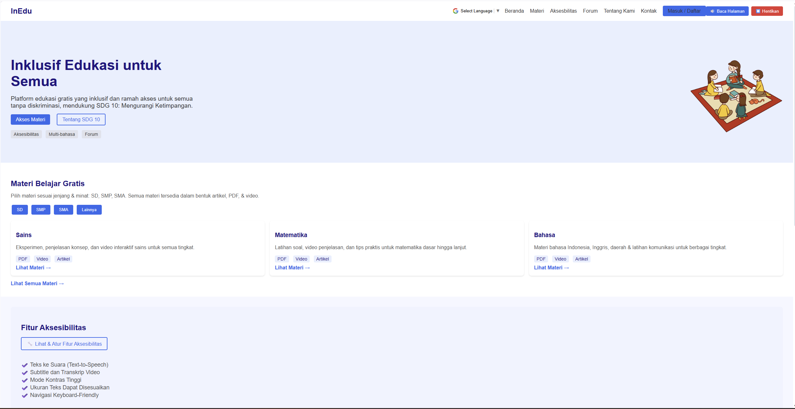
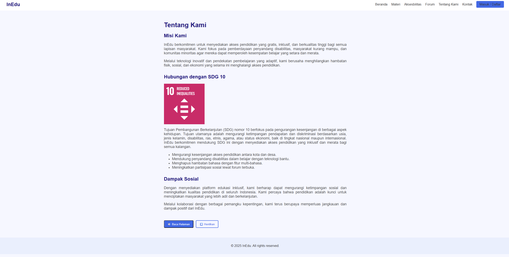
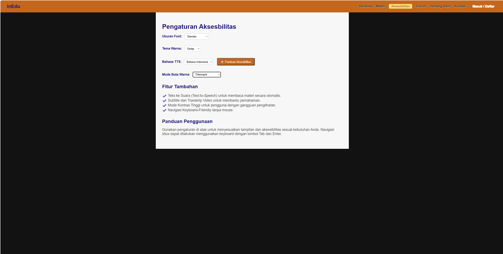

Berikut kumpulan project yang sudah saya kerjakan.
Dari tugas kuliah sampai eksperimen pribadi — semuanya punya cerita dan pelajaran masing-masing.
01 — Archive
Everything, in one place.
Filter berdasarkan jenis project. Klik gambar untuk memperbesar, atau buka project langsung lewat tombol yang tersedia.
Filter
01
Website InEdu

Main Interface
Tampilan utama InEdu

Tentang Kami
Halaman tentang website InEdu

Aksesibilitas
Fitur aksesibilitas
Website edukasi yang support untuk para disabilitas, dibuat saat project lecture HCI (Human Computer Interaction) dengan semangat SDG 10. Website ini terbuka untuk siapa pun dan punya fitur aksesibilitas seperti TTS yang mendukung bahasa Indonesia dan Inggris, tema terang/gelap/sepia, serta mode buta warna: tritanopia, deuteranopia, dan protanopia.
Website pertama kali saya buat untuk seleksi masuk BSLC (Binus Student Learning Center) divisi IT. Dibuat hanya dengan HTML dan CSS, mereplika design Figma yang diberikan menjadi website yang sama persis — semua elemen berfungsi.
Project website untuk Lab Human Computer Interaction (HCI) tentang website travel. Dibuat sesuai soal yang diberikan, dengan kebebasan pada layout, tulisan, dan isi — tetap mengikuti panduan dan ketentuan yang berlaku.
Project pribadi berupa software macro recorder, dibuat karena kesal dengan macro recorder yang hanya bisa berjalan global dan tidak bisa fokus ke satu program saja.
Project FLA menggunakan Java: SocierMart. Dibuat bersama kelompok 3 yang berisikan 3 orang, dengan menyempurnakan project dari salah satu anggota kelompok. Detail lengkap ada di dokumentasi.
Website portofolio yang anda lihat sekarang. Dibuat karena saya ingin menampilkan hasil proyek sambil memperkenalkan diri — anggap saja CV dalam versi web.